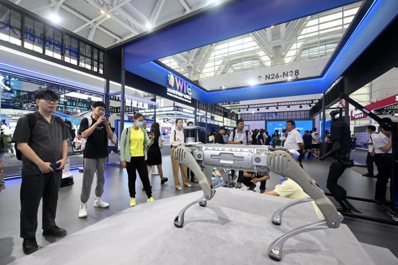
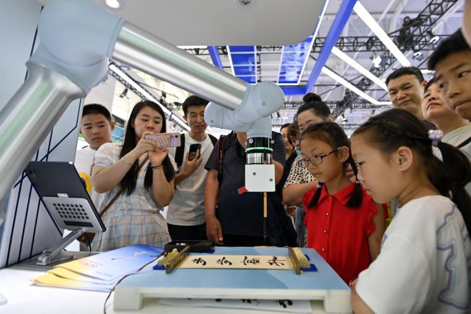
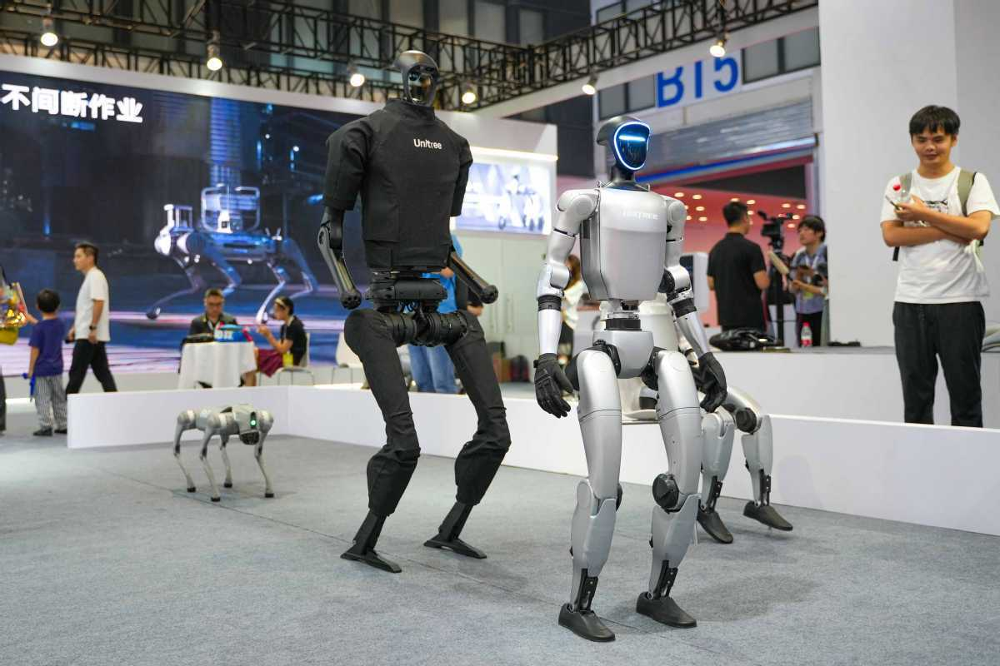

China telah muncul sebagai pemimpin global dalam pengembangan dan implementasi teknologi robotika, mengubah lanskap industri dan layanan di seluruh dunia. Dengan investasi besar dalam penelitian dan pengembangan, serta dukungan kebijakan pemerintah, negara ini telah berhasil menciptakan ekosistem robotika yang berkembang pesat.
Artikel ini akan mengulas beberapa kemajuan signifikan dalam teknologi robotika di China, berbagai jenis robot yang dikembangkan, dan dampaknya terhadap berbagai sektor.
Era Emas Robot Industri
China saat ini adalah pasar terbesar di dunia untuk robot industri. Robot-robot ini menjadi tulang punggung manufaktur, meningkatkan efisiensi, presisi, dan keamanan di pabrik-pabrik. Dari perakitan mobil hingga produksi elektronik, robot industri China kini bersaing ketat dengan raksasa global.
Perusahaan-perusahaan seperti SIASUN dan ESTUN Automation memimpin inovasi dalam robot industri, menawarkan solusi yang semakin canggih dan terjangkau.
World Intelligence Expo 2024.
Inovasi dalam Robot Layanan
Di luar pabrik, robot layanan China semakin merambah kehidupan sehari-hari. Mulai dari robot pengiriman makanan di restoran hingga robot perawat di rumah sakit, inovasi ini bertujuan untuk meningkatkan kualitas hidup dan mengatasi tantangan demografi. Robot-robot ini dirancang untuk berinteraksi lebih alami dengan manusia.
Perusahaan seperti UBTECH Robotics dan CloudMinds berada di garis depan dalam menciptakan robot layanan yang semakin cerdas dan adaptif, dengan kemampuan AI yang terus berkembang.
Visitors watch a robotic arm write calligraphy.
Robotik Khusus dan Canggih
Tidak hanya robot industri dan layanan, China juga berinvestasi besar dalam robotik khusus seperti robot pertanian, robot inspeksi infrastruktur, dan robot untuk eksplorasi lingkungan ekstrem. Robot-robot ini mengatasi tantangan unik dan membuka peluang baru dalam sektor-sektor yang sebelumnya sulit dijangkau.
Pengembangan **robot biomimetik** (yang meniru makhluk hidup) juga menjadi fokus, seperti robot anjing dan robot ikan, menunjukkan kemampuan riset yang mendalam.
Humanoids of Unitree Robotics at the World Robot Conference in Beijing in August.
Masa Depan Robotika China
Meskipun ada tantangan seperti persaingan global dan kebutuhan untuk terus berinovasi dalam teknologi inti, posisi China dalam peta robotika dunia sangatlah kuat. Dengan dukungan pemerintah yang berkelanjutan, fokus pada integrasi AI, dan kemampuan manufaktur yang besar, China diprediksi akan terus menjadi kekuatan pendorong di masa depan robotika global.
Perkembangan ini tidak hanya membentuk kembali industri di China, tetapi juga memengaruhi cara kerja dan hidup di seluruh dunia, menegaskan posisi China sebagai inovator utama di era otomasi.